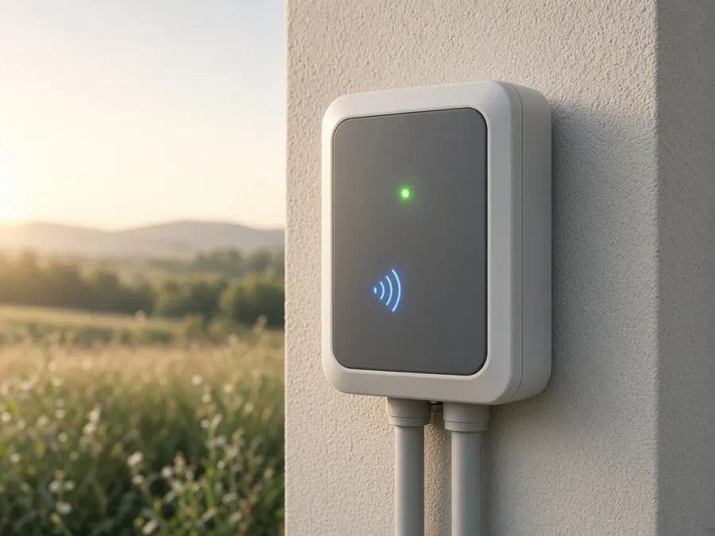
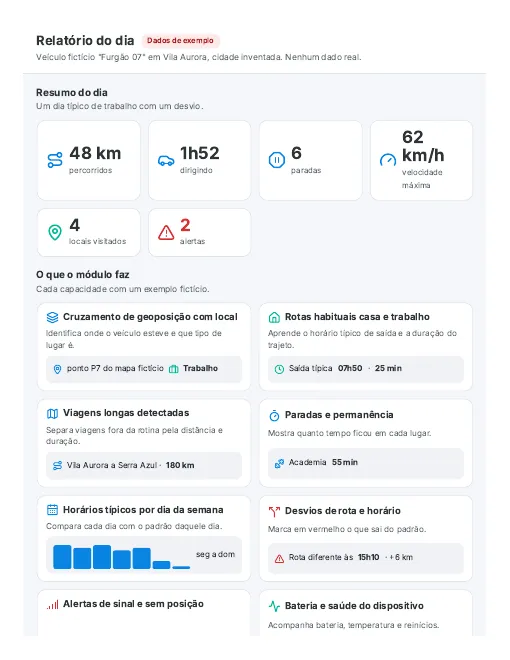

Início do sistema
Saúde, atenção e próxima ação; atualiza a cada minuto.
Dispositivos online
Dados hoje
Alertas ativos
Última atualização

Utilities
Consumo de dados

Relatório completo
Acessos
Eventos recentes
alertatroca de redeenvioligoudesligado